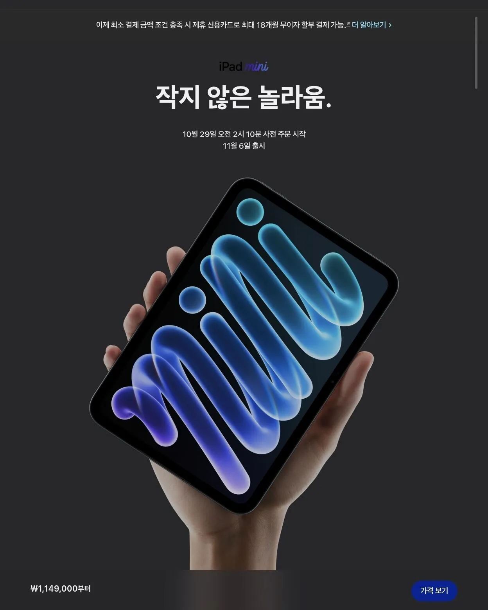
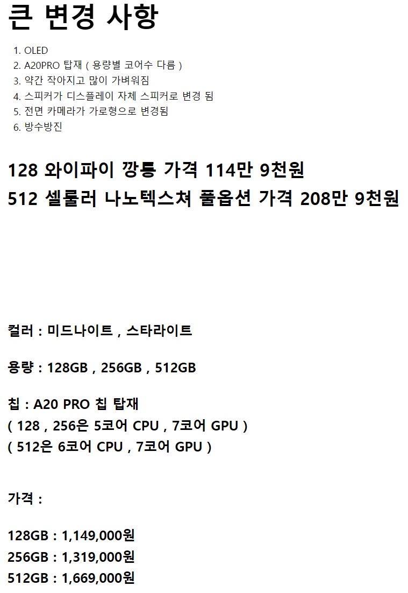

2026년에 OLED 60hz ㅋㅋㅋㅋㅋㅋㅋㅋㅋㅋㅋㅋㅋㅋㅋㅋㅋㅋㅋㅋㅋㅋㅋㅋㅋㅋㅋㅋㅋㅋㅋ
대체 어디서 이런 기괴한 디스플레이를 구해서 60hz 박는거임? ㅋㅋㅋㅋㅋㅋㅋㅋㅋㅋㅋㅋㅋㅋㅋㅋㅋㅋㅋ
이외에 전작대비
디스플레이 8.3 -> 8.5인치
무게는 293 -> 255g
가격은 전작 아이패드미니 7세대의 749000원에서 40만원 인상된 114만9천원 ㅋㅋㅋㅋㅋㅋㅋㅋㅋㅋ
진짜 앱등이들 사이에서도 벌써부터
"신앙심 테스트" 라고 불린다고 함 ㅋㅋㅋㅋㅋㅋㅋㅋㅋㅋ
얘네는 진짜 미니 60hz로 오래 우려먹네...게임머신으로 좋다고 해도 26년에 60은 진짜 개에반거같은데